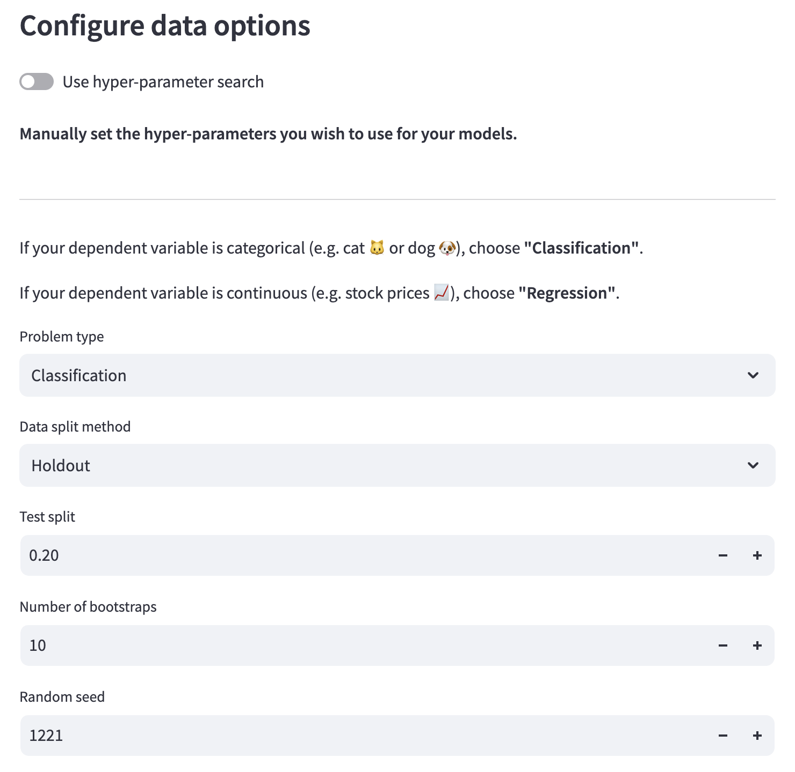
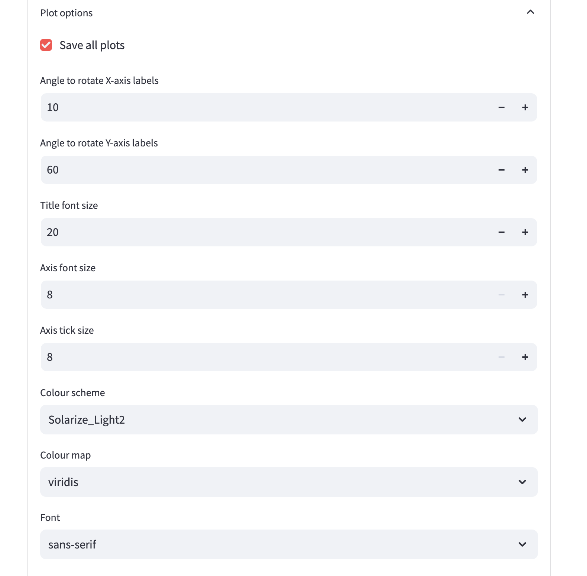
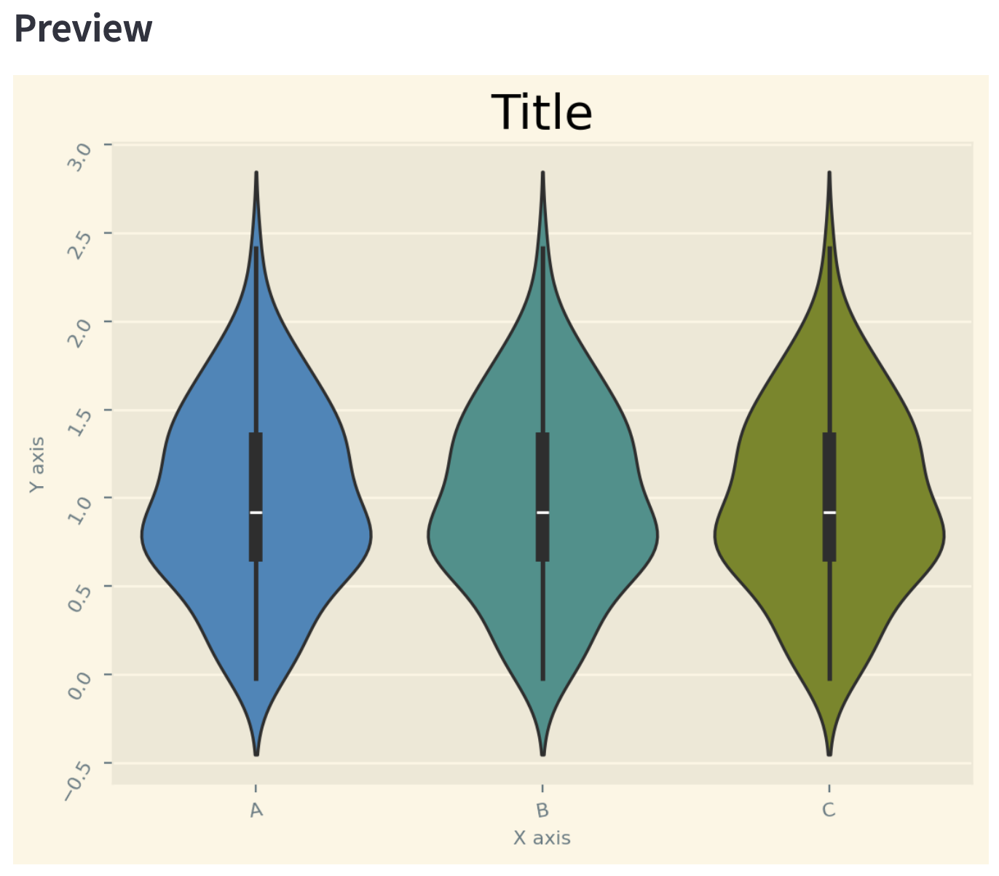

Creating an experiment¶
In BioFEFI, you must create an experiment before you can train models and perform feature importance analyses. To do this, navigate to the “New Experiment†page by clicking the link on the left hand side of the screen.
Create a new experiment¶
Choose a name for your experiment. You can see from the image below that there is a file path in front of the text box where you enter your experiment’s name. Your experiment will be save to at this path under a folder with the same name as the one you entered into the text box.
If you already have an experiment saved with the same name as the one you have entered, you will not be able to create the experiment.
Choose your data to train your with which to train your models. The file must be in CSV format.
Give a name to your dependent variable. This will be displayed on any plots generated by your experiment.

Configure data options¶
Select your problem type.
If your dependent variable is categorical (e.g. cat 🱠or dog ğŸ¶), choose “Classification”.
If your dependent variable is continuous (e.g. stock prices 📈), choose “Regression”.
Select your data split method
Data split methods are not available if using automatic hyper-parameter search.
“Holdout†will create a train-test split with a portion of the data randomly held out to test the model, which will be trained on the remaining portion of the data.
“K-fold†stands for K-fold cross validation. The test data is split from the training data, then the training data is split into k-folds. The folds are used to find the model parameters and the test set is used to evaluate the models.
Specify a test split size. This is a number between 0 and 1. The default is 0.20, i.e. 20% of the data will be used is the test data and 80% for training.
Test split is replaced by n splits when using K-fold as the Data split method.
Specify n splits. This is the number of folds for K-fold cross validation.
This is not available when using Holdout with manual hyper-parameter search.
Specify the number of bootstraps. This will train a model n times, where n is the number of bootstraps. The data will be randomly split n times into new bataches of training and testing sets. Defaults to 10.
When using automatic hyper-parameter search, bootstrapping is not available.
Specify the random seed. Data splitting is pseudo-random and this setting helps make an experiment repeatable, while reducing bias in the training and testing sets.

Configure experiment plots¶
Save all plots. Defaults to
True. Sometimes you may not want the plots, but you can produce them for publications, presentations, reports, etc.Angle to rotate X-axis labels. Rotate X-axis labels for better legibility. Defaults to 10 degrees.
Angle to rotate Y-axis labels. Rotate Y-axis labels for better legibility. Defaults to 60 degrees.
Title font size. Defaults to 20px.
Axis font size. Defaults to 8px.
Axis tick size. Defaults to 8px.
Colour scheme. Defaults to “Solarize_Light2”.
Options:
Solarize_Light2
_classic_test_patch
_mpl-gallery
_mpl-gallery-nogrid
bmh
classic
dark_background
fast
fivethirtyeight
ggplot
grayscale
seaborn-v0_8
seaborn-v0_8-bright
seaborn-v0_8-colorblind
seaborn-v0_8-dark
seaborn-v0_8-dark-palette
seaborn-v0_8-darkgrid
seaborn-v0_8-deep
seaborn-v0_8-muted
seaborn-v0_8-notebook
seaborn-v0_8-paper
seaborn-v0_8-pastel
seaborn-v0_8-poster
seaborn-v0_8-talk
seaborn-v0_8-ticks
seaborn-v0_8-white
seaborn-v0_8-whitegrid
tableau-colorblind10
Colour map. Defaults to “viridis”
Options:
The list is very long but the full reference can be viewed here.
Font. Defaults to “sans-serif”.
Options:
serif
sans-serif
cursive
fantasy
monospace


Press Create¶
Once you’re happy with your experiment set-up, press the “Create†button and your experiment configurations will be saved, ready to be used to train models and run feature importance analyses.